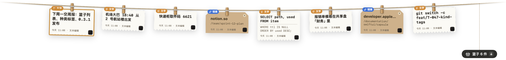
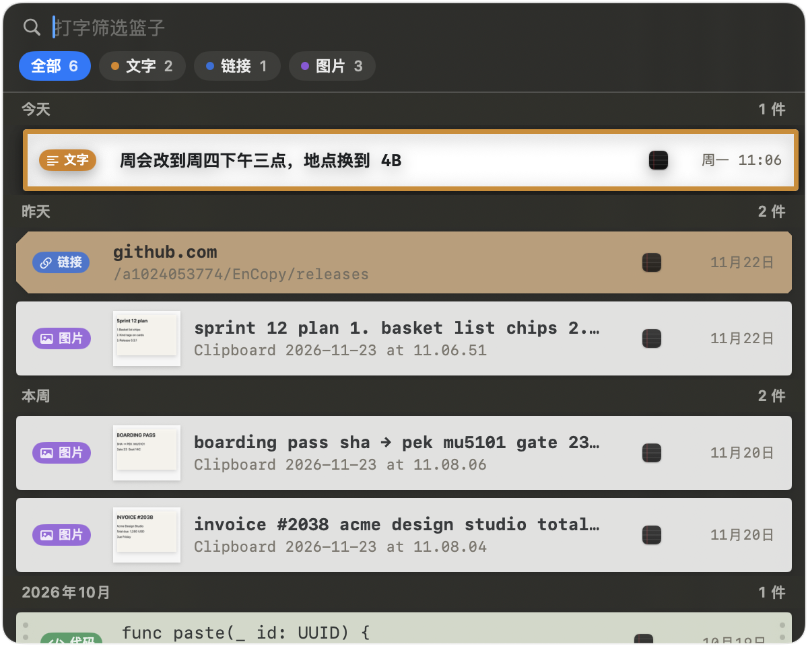
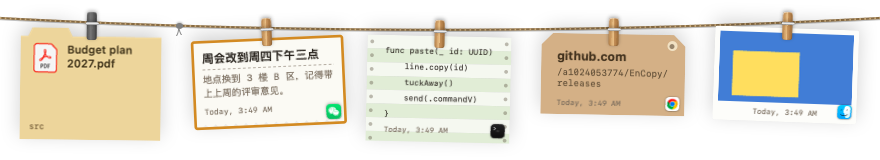
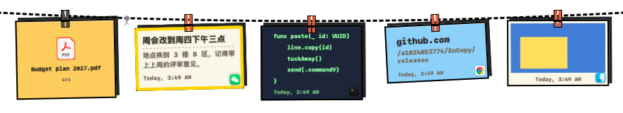
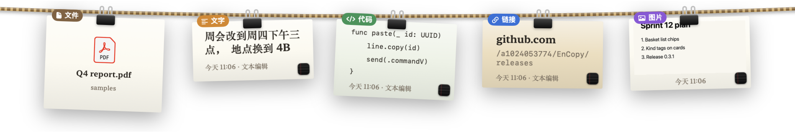
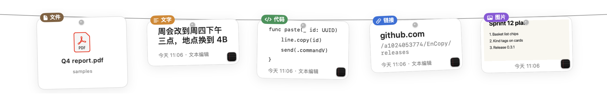
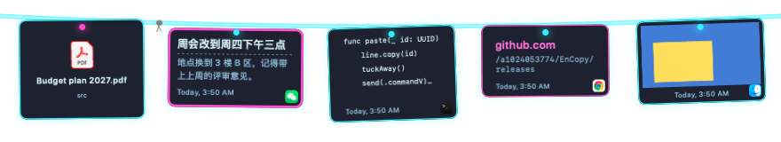
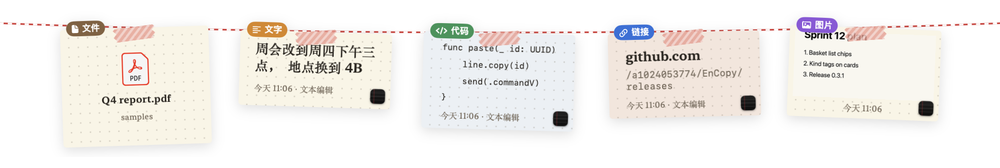

挂上
复制就挂上
复制的文字、链接、代码和访达里的文件装好就记，不用先设置。最新的挂在绳结右边第一个，越往右越旧。
Mac 上的剪贴板历史 · 0.4.0 · 这一页就是它
选中这句，按 ⌘C：明天上午十点和设计组过稿
这页上任何一段字都行，复制了就挂上最上面那根绳。
按 ⌥C 叫它来，←→ 挑一件。直接打字就是搜索。
按 ⏎，贴进「笔记」，那一件回到绳头。
macOS 14 及以上Apple 芯片和 Intel免费，MIT 许可
议题：首页改版
待办：
复制、叫它来、贴回去、搜索、换主题，都在这一段里。先静音播放，想听就点「打开声音」，音乐和音效都是现场合成的。
绳上挂最近用到的，挂满了就往篮子里掉。往左拖，看它怎么管你复制过的东西。
复制的文字、链接、代码和访达里的文件装好就记，不用先设置。最新的挂在绳结右边第一个，越往右越旧。
一屏宽挂满后，最老的一件掉进篮子，截图和复制的图片也一样。⌥C 后按 ↓ 能把篮子展开成列表一路翻到底，打字照样搜得到，图片按图里的字搜。
贴出去、点一下复制的那件回到绳头，下次按 ⌥C 第一个选中的就是它，和剪贴板里的一样。
同样的内容再复制一遍，原来那件回到绳头，绳上和篮子里都不会多一份。
在密码框里输入时复制的；密码管理器标为私密或临时的；从 iPhone 等设备通过通用剪贴板过来的。
第一次打开时问你要不要交给它。交给它后，截图那一瞬间就挂上绳，不出浮动缩略图，不堆到桌面。
指针在哪块屏，按 ⌥C 绳子就落在哪块屏，搜索框跟着过去。
记下的东西存在 ~/Library/Application Support/EnCopy，只有你能读。EnCopy 不联网，菜单栏里随时暂停记录。
⌥C 后按 ↓，或点绳右下角的「篮子 N 件」，篮子展开成列表：从新到旧一路到最早，按今天、昨天、本周、再往前按月分组，一行一条纸，前面标着文字、代码、链接、图片还是文件。上方「全部 / 文字 / 链接 / 图片 / 文件」标签带件数，点了按种类筛。访达里一次复制的一批文件是一行「N 个文件」，⌘↓ 展开，挑一个单独贴。↑↓ 一条条看，← → 跳一天，⏎ 贴，⌘P 收藏回绳上。
每张纸右下角是复制它的 App 的图标。每个 App 能设成照常记、一小时后清、不记，「密码」和「钥匙串访问」默认不记；验证码 10 分钟后自己清掉。
文字和访达的文件留一年，截图原图 30 天后缩成缩略图，图里的字还能搜；原图合计的上限在设置 → 保留里改。过期的和「清理历史」手动清掉的，先在「最近清掉」放 7 天，能整批放回。
复制了新东西，绳子探出来 1.5 秒再收回去。嫌打扰，在设置 → 晾衣绳里调成 0.8 到 4 秒，或者干脆关掉。
← 拖动或滚动 →


EnCopy 只注册 ⌥C 一个全局快捷键。别的键只在绳子拿到键盘时有效，绳子一收，全部还给你正在用的 App：⌘Z 还是那个 App 的撤销。
不想按键也行。把指针停在菜单栏正中，绳子滑下来：单击一件复制，双击打开，指针离开就收起。不喜欢它自己滑下来，在菜单栏图标 → 放下晾衣绳里关掉。
纸、夹子和绳子一起换。在设置 → 晾衣绳里挑一套，马上生效。





